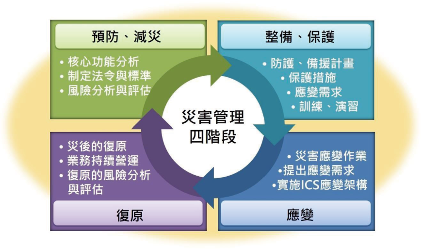

災害管理
所謂災害管理(Disaster Management)，是針對危險情況的一種持續性、動態性的規劃管理過程，以減少危險情況的不確定性及降低災害發生之可能。從「管理」的觀念而言，有關災害種類、預防方法、發生時間、應變方式、復原計畫、政策檢討等，均是災害管理的範疇。美國聯邦緊急事務管理署(Federal Emergency Management Agency, FEMA)將災害管理分為災前的減災(Mitigation)、整備(Preparedness)，災時的應變(Response)，以及災後的復原(Recovery)四個階段，每個階段環環相扣，一個階段沒有做好，將會影響到下一個階段的執行。下圖為「關鍵基礎設施防護演習指導手冊」之災害管理四階段圖，並列出各階段之重點。

減輕或最大限度地減少一次危害事件的不利影響。通常無法完全避免災害，特別是自然災害的不利影響，但可以透過各種戰略與行動大幅降低其程度及嚴重性。減災措施一般可分為結構性減災措施及非結構性減災措施二類，主要在災害發生前施行，以降低未來災害的發生頻率、規模及衝擊。
意指興建實體防災設施；以土石流災害為例，如興建防砂壩、梳子壩、導流堤、沉砂池等硬體工程，以及建立警戒與監測系統等。
意指透過法令、政策、保險或各種軟體與管理對策來減緩、降低或轉移災害可能造成之衝擊；例如土石流潛勢溪流之調查與公開、防災疏散避難規劃、山坡地利用管理、水土保持計畫擬定與實施、特定水土保持區劃定等。
使各國政府、應對及復原組織、社區至個人具備在有效預見及應對可能發生、即將發生或已經發生災害中，有效管理所有類型之緊急狀況並實現從應對到持續恢復有序過渡的能力。對於災害風險的妥善分析及與預警系統的良好聯繫，包括：應急規劃、儲存設備及用品，制定協調安排、疏散與公共資訊，以及相關培訓及實地演習。災害來臨前有充足的準備，熟悉救災的運作程序，在災害發生時可臨危不亂，應付可能產生的各種狀況，避免災害擴大與災情損失。主要工作有三：
建立緊急行動中之職權與責任，並儲備資源以支持救災行動。訓練工作關乎災害處理、災害應變能力之執行，透過訓練工作，可迅速明瞭組織的計畫及設備的運作，提升運作效率。
計畫是行動的依據，事先擬定災變管理計畫，災害發生時就可協調各部門採取一致的行動。良好的應變計畫可使人員妥善利用有限資源，更可避免災損擴大。
於災害未發生時，預先發布危險訊息，提醒民眾提高警覺、做好防災準備工作。
在災害發生前、發生期間及發生後直接採取行動，以挽救生命、減少對健康的影響、確保公共安全及滿足受影響人員的基本生存需求，主要側重於當前與短期的需要，有時被稱為救災。有效、高效及即時的應變取決於瞭解災害風險的備災措施，包括發展個人、社區、組織、國家和國際社會的應變能力。除依事先擬定之災害應變計畫外，對於災害發生時的應變作業，依照急迫性可分為災害緊急通報與災害應變中心兩個應變時期。
於應變小組成立前進行，係為爭取救災時效，於災害發生時或有發生之可能時，於第一時間進行各級政府災害權責單位複式多元通報。
始於災害應變中心成立，主要任務為動員救災人力並啟動緊急醫療救護系統，於第一時間搶救人民生命及財產，並迅速疏散、收容與撤離災民。
為一項重建公共建設、讓社會與經濟恢復正常運作之政策，可分為短期復原與長期復原，短期復原重點為維生管線(lifeline systems)之恢復，包括電力、通訊、自來水、污水系統、運輸等系統，以提供居民基本食物、衣物、避難之需求，並維持災區的治安；長期復原則是恢復經濟活動、重建社會公共設施與居民生活。且根據可持續發展及重建得更好的原則，恢復或改善受災害影響的社區或社會的生計、衛生、經濟、實體、社會、文化與環境資產，以避免或減少未來的災害風險。
(資料來源：農業部農村發展及水土保持署土石流及大規模崩塌防災資訊網)